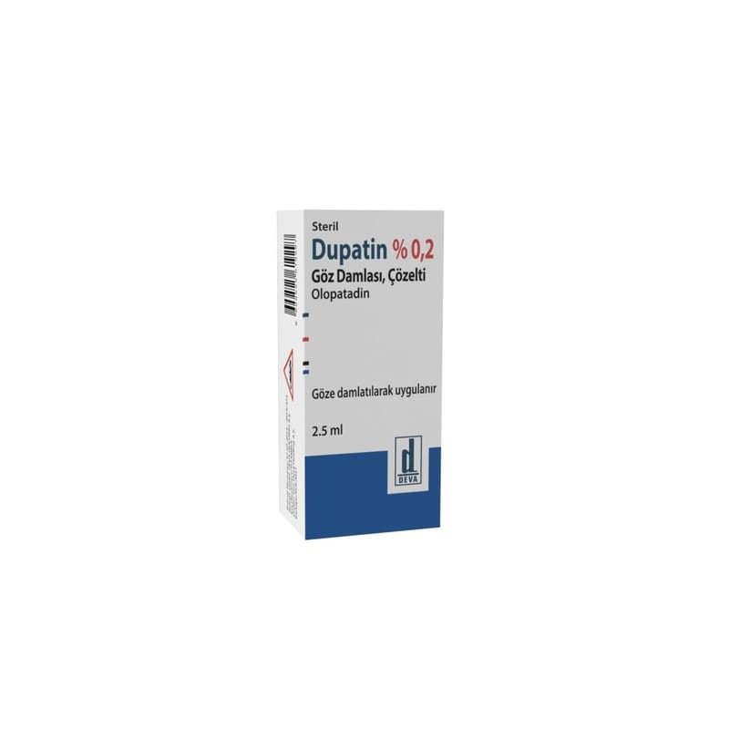

Dupatin % 0.2 Göz Damlası, Çözelti, 1 Adet

Ne için kullanılır
KT · Bölüm 1DUPATİN çevirmeli, beyaz polipropilen kapak ile kapatılmış opak beyaz renkli, düşük yoğunluklu polietilen (LDPE) şişede sunulan bir göz damlasıdır. Berrak ile açık sarı bir çözeltidir.
DUPATİN alerjik konjonktivit sonucu ortaya çıkan oküler belirti ve bulguların önlenmesi ve tedavisinde kullanılır.
Alerjik konjonktivit: Polenler, ev tozu veya hayvan kürkü gibi bazı maddeler (alerjenler) göz yüzeyinde şişmenin yanı sıra kızarıklık, şiddetli kaşıntıya neden olabilir.
DUPATİN gözün alerjik rahatsızlıklarının tedavisinde kullanılan bir antialerjik ilaçtır. Alerjik reaksiyonların şiddetini azaltarak etki eder.